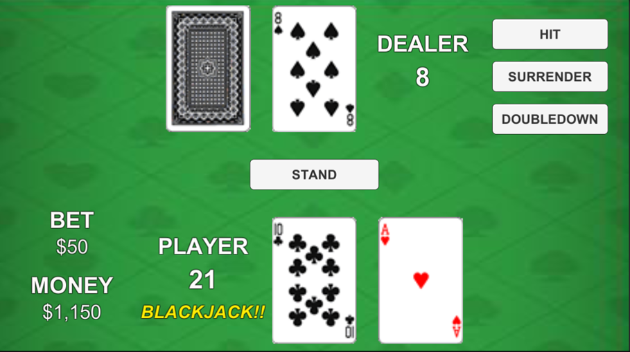

BlackjackUnity
Windowsフォームアプリで作成したBLACKJACKのUnity移植版
■ テーマ：
- サンプルコードを使わず、自作で既存のゲームの動きを実現させる。
- 上記をもとにWindowsフォームアプリで制作したBLACKJACKを、Unityに移植する。
■ ジャンル：
■ ターゲット層：
■ 独自性：
ゲーム
- ゲームクリア後にボーナスステージとして、勝利する度にBETの最低額が勝利時のBET額に変わる、よりハイリスクハイリターンな設定に変化。
プログラミング
- トランプの管理を、ブラックジャック以外のトランプゲームでも使用できるように作成し、汎用性を持たせた。
■ 技術：
プログラミングに用いた手法等
- トランプの管理、プレイヤー、ディーラーの行動の管理をクラス、継承を用いてオブジェクト指向で設計。
- 勝敗の管理と、ノーマルステージ、ボーナスステージの管理を列挙型を使うことで、コードを見易くした。
初期制作のWindowsアプリからUnityへの移植時の改善点、変更点
-
トランプの管理方法の改善点
- Windowsアプリとして制作時 → 数字、トランプの絵
- Unityへの移植時 → 上記に加えスーツ(♠♥♦♣)も対象とした。
-
プレイヤー、ディーラーの管理方法の改善点
- Windowsアプリとして制作時 → 変数のみ全てを管理
- Unityへの移植時 → 基底クラスを作り、継承を用いて各々を管理
-
勝敗の管理判定方法の改善点
- Windowsアプリとして制作時 → 一つのif文内に勝敗決定時の行動を全て記述。
- Unityへの移植時 → メソッドで行動を分け、見易くした。
-
ゲームの独自性の変更点
- Windowsアプリとして制作時 → ディーラーの性格機能を追加(性格によってカードを引く数字の値を変化)
- Unityへの移植時 → VIPRoom機能を追加(ボーナスステージとしてハイリスクハイリターンな設定に変化)
■ ゲームの説明：
ブラックジャックの基本ルール
- ディーラーと1対1で、いかに手札を21近い数字にするかで勝敗が決まる。
- Aは1又は11として数え、絵札(J,Q,K)は全て10として数える。
- 最初にBETする金額を決め、2枚のカードが配られる。その時点で21（Aと10又は、絵札の組み合わせ)だと、一番強い役（BLACKJACK)となる。
- 配当金は、BET額 × 勝利：2倍 引き分け：1倍 敗北：０
- ブラックジャックで勝利すると2.5倍
本アプリのゲーム仕様
- MONEYが、＄10,000を超えたらゲームクリア。
- MONEYが、BETの最低額を支払えなくなったらゲームオーバー。

コマンドの説明
-
GAMESTART
-
HIT
-
SURRENDER
- カードが最初に配られた時点でのみ宣言可能。ゲームを降ります。掛け金の半分を返金。
-
DOUBLEDOWN
- カードが最初に配られた時点でのみ宣言可能。掛け金を倍にしてカードを一枚追加し、自分のターンを終了。
-
STAND
-
RETRY
■ 開発過程
- メイン画面作成
- トランプの管理クラス作成
- カードの配置、表示確認
- トランプの数字の計算機能追加
- ボタン管理クラス作成
- ボタン押下時の各メソッド追加
- 勝敗判定機能、掛け金機能、UIの追加
- ゲームクリア、ゲームオーバー条件の追加
■ 総括
- 自作のWindowsアプリをUnityへ移植することで過去に書いたコードを見返し、自分の成長を大いに感じることが出来た。